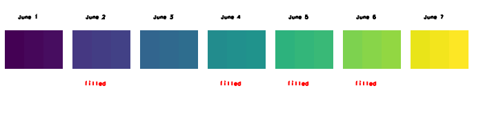

A gap is a period between two maps of the dataset in which no map is
registered; t.rast.list with
method=deltagaps shows the gaps as rows with None in
the columns id, name and mapset, as the
first example does. t.rast.gapfill finds all gaps of the dataset by
itself. It takes the map that ends where the gap starts (the predecessor) and
the map that starts where the gap ends (the successor) and interpolates between
them.
The tool cuts each gap into steps of the granularity of the dataset and makes
one new map for each step. A gap of one granule gets one map, a gap of three
granules three maps. The new map gets the start and the end time of its step.
The n maps of a gap lie at the positions
i / (n + 1) of the way from the predecessor to the successor, so
in each cell the value of map i is
v0 + i * (v1 - v0) / (n + 1), where v0 and
v1 are the values of the predecessor and the successor. In the
first example, the gap between the values 30 and 70 holds three maps with the
values 40, 50 and 60.
The option input names the space time raster dataset. The option
where takes an SQL condition on the registered maps and selects the maps
in which the tool looks for gaps, for instance by their
start_time; without it, all maps are used. Only a gap between two
selected maps is found, so a condition limits the gaps that are filled, as the
third example shows.
The option basename names the new maps: a suffix, separated from the basename by an underscore, makes each name unique. The option suffix chooses the suffix:
gran (the default) takes the start time of the new map, cut to
the granularity of the dataset: 2026_06_02 in a dataset of
days.time takes the full start time:
2026_06_04T00_00_00.num gives two numbers, each with five digits:
00005_00001. num%02 gives two digits:
05_01. The first number is the number of the entries of the
selected dataset (maps and gaps) plus the number of the gap, counted from 1; it
is the same for all maps of one gap. The second number counts the maps of the
gap from 1. The fourth example shows this.
A dataset with relative time has no calendar dates; its maps are named with
numbers, as the fourth example shows with the suffix num%02.
The option nprocs sets the number of r.series.interp runs at
the same time, 1 by default. The gaps are interpolated
independently of each other, so more than one run at a time gives the same
maps, only faster.
<name@mapset> cannot be filled, only gaps after an interval
can be filled". It refuses a dataset whose selected maps are all time instants
in the same way, with "Space time raster dataset
<name@mapset> holds only time instants, only intervals can
be filled". A gap before a time instant is filled from the interval before the
gap and the instant.
If more than one map ends where a gap starts, or starts where it ends, t.rast.gapfill warns "More than one predecessor of the gap found. Using the first found." or "More than one successor of the gap found. Using the first found." The first found is the map that starts first; among maps that start at the same time, the order is not defined.
If the selected maps have no gap, the tool prints "No gaps found" and leaves the dataset as it is.
The tool stops with the message "Map with name
<name@mapset> already exists. Please use another base name."
if one of the new maps exists already, in the mapset or in the temporal
database. With --overwrite, the tool replaces the map; if the map is
registered in another dataset as well, that dataset loses it. An unknown
suffix is refused before anything is written, for instance with "Invalid
suffix <gram>, use gran, time, num or num%NN" for
suffix=gram. An SQL error in where stops the tool with a
message that begins with "Invalid where condition".
The flag -t of earlier releases, which had no effect, was removed; the parser refuses it.
rain holds three daily maps of 2 rows and 3 columns.
The value of a cell is the level of the map plus the number of its column: the
levels are 10 for June 1, 30 for June 3 and 70 for June 7, so the maps have the
values 11 to 13, 31 to 33 and 71 to 73. The maps of June 2 and of June 4 to 6
are missing.
The first block lists the dataset with its gaps: one of a day, one of three days. The second block fills them with the default suffix, which names the new maps after their day, and lists the dataset again. The gap of one day gets one map, in the middle between 10 and 30: level 20. The gap of three days gets three maps at one quarter, one half and three quarters of the way from 30 to 70: levels 40, 50 and 60. The third block shows that no gap is left.
Command line:
g.region n=2 s=0 e=3 w=0 res=1 r.mapcalc expression="rain_1 = 10.0 + col()" r.mapcalc expression="rain_2 = 30.0 + col()" r.mapcalc expression="rain_3 = 70.0 + col()" t.create output=rain title="Rain" description="Daily rain with gaps" t.register input=rain maps=rain_1 start=2026-06-01 end=2026-06-02 t.register input=rain maps=rain_2 start=2026-06-03 end=2026-06-04 t.register input=rain maps=rain_3 start=2026-06-07 end=2026-06-08 t.rast.list input=rain method=deltagaps
id|name|mapset|start_time|end_time|interval_length|distance_from_begin rain_1@PERMANENT|rain_1|PERMANENT|2026-06-01 00:00:00|2026-06-02 00:00:00|1.0|0.0 None|None|None|2026-06-02 00:00:00|2026-06-03 00:00:00|1.0|1.0 rain_2@PERMANENT|rain_2|PERMANENT|2026-06-03 00:00:00|2026-06-04 00:00:00|1.0|2.0 None|None|None|2026-06-04 00:00:00|2026-06-07 00:00:00|3.0|3.0 rain_3@PERMANENT|rain_3|PERMANENT|2026-06-07 00:00:00|2026-06-08 00:00:00|1.0|6.0
t.rast.gapfill input=rain basename=filled t.rast.list input=rain columns=name,start_time,end_time,min,max
name|start_time|end_time|min|max rain_1|2026-06-01 00:00:00|2026-06-02 00:00:00|11.0|13.0 filled_2026_06_02|2026-06-02 00:00:00|2026-06-03 00:00:00|21.0|23.0 rain_2|2026-06-03 00:00:00|2026-06-04 00:00:00|31.0|33.0 filled_2026_06_04|2026-06-04 00:00:00|2026-06-05 00:00:00|41.0|43.0 filled_2026_06_05|2026-06-05 00:00:00|2026-06-06 00:00:00|51.0|53.0 filled_2026_06_06|2026-06-06 00:00:00|2026-06-07 00:00:00|61.0|63.0 rain_3|2026-06-07 00:00:00|2026-06-08 00:00:00|71.0|73.0
t.rast.list input=rain method=deltagaps
id|name|mapset|start_time|end_time|interval_length|distance_from_begin rain_1@PERMANENT|rain_1|PERMANENT|2026-06-01 00:00:00|2026-06-02 00:00:00|1.0|0.0 filled_2026_06_02@PERMANENT|filled_2026_06_02|PERMANENT|2026-06-02 00:00:00|2026-06-03 00:00:00|1.0|1.0 rain_2@PERMANENT|rain_2|PERMANENT|2026-06-03 00:00:00|2026-06-04 00:00:00|1.0|2.0 filled_2026_06_04@PERMANENT|filled_2026_06_04|PERMANENT|2026-06-04 00:00:00|2026-06-05 00:00:00|1.0|3.0 filled_2026_06_05@PERMANENT|filled_2026_06_05|PERMANENT|2026-06-05 00:00:00|2026-06-06 00:00:00|1.0|4.0 filled_2026_06_06@PERMANENT|filled_2026_06_06|PERMANENT|2026-06-06 00:00:00|2026-06-07 00:00:00|1.0|5.0 rain_3@PERMANENT|rain_3|PERMANENT|2026-06-07 00:00:00|2026-06-08 00:00:00|1.0|6.0
Python (grass.tools):
from grass.tools import Tools
tools = Tools()
tools.g_region(n=2, s=0, e=3, w=0, res=1)
for number, level in ((1, 10), (2, 30), (3, 70)):
tools.r_mapcalc(expression=f"rain_{number} = {level}.0 + col()")
tools.t_create(output="rain", title="Rain", description="Daily rain with gaps")
tools.t_register(input="rain", maps="rain_1", start="2026-06-01", end="2026-06-02")
tools.t_register(input="rain", maps="rain_2", start="2026-06-03", end="2026-06-04")
tools.t_register(input="rain", maps="rain_3", start="2026-06-07", end="2026-06-08")
print(tools.t_rast_list(input="rain", method="deltagaps").text)
id|name|mapset|start_time|end_time|interval_length|distance_from_begin rain_1@PERMANENT|rain_1|PERMANENT|2026-06-01 00:00:00|2026-06-02 00:00:00|1.0|0.0 None|None|None|2026-06-02 00:00:00|2026-06-03 00:00:00|1.0|1.0 rain_2@PERMANENT|rain_2|PERMANENT|2026-06-03 00:00:00|2026-06-04 00:00:00|1.0|2.0 None|None|None|2026-06-04 00:00:00|2026-06-07 00:00:00|3.0|3.0 rain_3@PERMANENT|rain_3|PERMANENT|2026-06-07 00:00:00|2026-06-08 00:00:00|1.0|6.0
tools.t_rast_gapfill(input="rain", basename="filled") print(tools.t_rast_list(input="rain", columns="name,start_time,end_time,min,max").text)
name|start_time|end_time|min|max rain_1|2026-06-01 00:00:00|2026-06-02 00:00:00|11.0|13.0 filled_2026_06_02|2026-06-02 00:00:00|2026-06-03 00:00:00|21.0|23.0 rain_2|2026-06-03 00:00:00|2026-06-04 00:00:00|31.0|33.0 filled_2026_06_04|2026-06-04 00:00:00|2026-06-05 00:00:00|41.0|43.0 filled_2026_06_05|2026-06-05 00:00:00|2026-06-06 00:00:00|51.0|53.0 filled_2026_06_06|2026-06-06 00:00:00|2026-06-07 00:00:00|61.0|63.0 rain_3|2026-06-07 00:00:00|2026-06-08 00:00:00|71.0|73.0
print(tools.t_rast_list(input="rain", method="deltagaps").text)
id|name|mapset|start_time|end_time|interval_length|distance_from_begin rain_1@PERMANENT|rain_1|PERMANENT|2026-06-01 00:00:00|2026-06-02 00:00:00|1.0|0.0 filled_2026_06_02@PERMANENT|filled_2026_06_02|PERMANENT|2026-06-02 00:00:00|2026-06-03 00:00:00|1.0|1.0 rain_2@PERMANENT|rain_2|PERMANENT|2026-06-03 00:00:00|2026-06-04 00:00:00|1.0|2.0 filled_2026_06_04@PERMANENT|filled_2026_06_04|PERMANENT|2026-06-04 00:00:00|2026-06-05 00:00:00|1.0|3.0 filled_2026_06_05@PERMANENT|filled_2026_06_05|PERMANENT|2026-06-05 00:00:00|2026-06-06 00:00:00|1.0|4.0 filled_2026_06_06@PERMANENT|filled_2026_06_06|PERMANENT|2026-06-06 00:00:00|2026-06-07 00:00:00|1.0|5.0 rain_3@PERMANENT|rain_3|PERMANENT|2026-06-07 00:00:00|2026-06-08 00:00:00|1.0|6.0
rain in time order,
with the four maps that t.rast.gapfill made in the first example
marked. r.colors gives all maps the same
colour table, viridis, over their common range from 11 to 73, so
the colour of a map follows its level: it grows from the dark map of June 1 to
the bright map of June 7 in equal steps over the gaps.
d.frame makes one frame for each map and
each label, d.rast draws a map and
d.text writes a label.
Command line:
maps=rain_1,filled_2026_06_02,rain_2,filled_2026_06_04,filled_2026_06_05,filled_2026_06_06,rain_3
r.colors map=$maps color=viridis
d.mon start=cairo output=t_rast_gapfill_filled.png width=700 height=170
day=1
for map in ${maps//,/ }; do
left=$(( (day - 1) * 14 + 1 ))
right=$(( left + 12 ))
d.frame -c frame=date$day at=76,96,$left,$right
d.text text="June $day" at=5,40 color=black size=22
d.frame -c frame=map$day at=40,75,$left,$right
d.rast map=$map
case $map in filled*)
d.frame -c frame=gap$day at=18,40,$left,$right
d.text text=filled at=5,40 color=red size=22 ;;
esac
day=$((day + 1))
done
d.mon stop=cairo
Python (grass.tools):
maps = "rain_1,filled_2026_06_02,rain_2,filled_2026_06_04,filled_2026_06_05,filled_2026_06_06,rain_3"
tools.r_colors(map=maps, color="viridis")
tools.d_mon(start="cairo", output="t_rast_gapfill_filled.png", width=700, height=170)
for day, name in enumerate(maps.split(","), start=1):
left = (day - 1) * 14 + 1
right = left + 12
tools.d_frame(flags="c", frame=f"date{day}", at=[76, 96, left, right])
tools.d_text(text=f"June {day}", at=[5, 40], color="black", size=22)
tools.d_frame(flags="c", frame=f"map{day}", at=[40, 75, left, right])
tools.d_rast(map=name)
if name.startswith("filled"):
tools.d_frame(flags="c", frame=f"gap{day}", at=[18, 40, left, right])
tools.d_text(text="filled", at=[5, 40], color="red", size=22)
tools.d_mon(stop="cairo")

Figure: The seven daily maps of the dataset rain after
filling. The maps of June 2 and of June 4 to 6 are the filled ones; the colour
grows from the level 10 of June 1 to the level 70 of June 7.
wet holds the same three maps as the first example,
under new names, so its gaps are the same. The option where keeps the
maps that start on or after June 3, which are the maps of June 3 and June 7.
The gap between them, from June 4 to June 6, is filled; the gap of June 2 lies
before the first selected map and stays empty. With
suffix=time, the names carry the full start time. The option
nprocs lets two r.series.interp runs go at the same time; the
result is the same as with one.
Command line:
r.mapcalc expression="wet_1 = 10.0 + col()"
r.mapcalc expression="wet_2 = 30.0 + col()"
r.mapcalc expression="wet_3 = 70.0 + col()"
t.create output=wet title="Wet" description="Daily rain with gaps"
t.register input=wet maps=wet_1 start=2026-06-01 end=2026-06-02
t.register input=wet maps=wet_2 start=2026-06-03 end=2026-06-04
t.register input=wet maps=wet_3 start=2026-06-07 end=2026-06-08
t.rast.gapfill input=wet basename=late suffix=time nprocs=2 \
where="start_time >= '2026-06-03'"
t.rast.list input=wet columns=name,start_time,min,max
name|start_time|min|max wet_1|2026-06-01 00:00:00|11.0|13.0 wet_2|2026-06-03 00:00:00|31.0|33.0 late_2026_06_04T00_00_00|2026-06-04 00:00:00|41.0|43.0 late_2026_06_05T00_00_00|2026-06-05 00:00:00|51.0|53.0 late_2026_06_06T00_00_00|2026-06-06 00:00:00|61.0|63.0 wet_3|2026-06-07 00:00:00|71.0|73.0
Python (grass.tools):
for number, level in ((1, 10), (2, 30), (3, 70)):
tools.r_mapcalc(expression=f"wet_{number} = {level}.0 + col()")
tools.t_create(output="wet", title="Wet", description="Daily rain with gaps")
tools.t_register(input="wet", maps="wet_1", start="2026-06-01", end="2026-06-02")
tools.t_register(input="wet", maps="wet_2", start="2026-06-03", end="2026-06-04")
tools.t_register(input="wet", maps="wet_3", start="2026-06-07", end="2026-06-08")
tools.t_rast_gapfill(
input="wet",
basename="late",
suffix="time",
nprocs=2,
where="start_time >= '2026-06-03'",
)
print(tools.t_rast_list(input="wet", columns="name,start_time,min,max").text)
name|start_time|min|max wet_1|2026-06-01 00:00:00|11.0|13.0 wet_2|2026-06-03 00:00:00|31.0|33.0 late_2026_06_04T00_00_00|2026-06-04 00:00:00|41.0|43.0 late_2026_06_05T00_00_00|2026-06-05 00:00:00|51.0|53.0 late_2026_06_06T00_00_00|2026-06-06 00:00:00|61.0|63.0 wet_3|2026-06-07 00:00:00|71.0|73.0
model holds the output of a model per hour, with the
values 100 for hour 0 to 1, 200 for hour 1 to 2 and 500 for hour 4 to 5. Its
granularity is one hour, so the gap from hour 2 to hour 4 gets two maps at one
third and two thirds of the way from 200 to 500: 300 and 400.
A dataset with relative time has no calendar dates, so the names are numbers.
The dataset has four entries, three maps and the gap; the gap is the first, so
the first number is 4 + 1 = 5, the second counts the two new maps. With
suffix=num%02 the numbers have two digits.
Command line:
r.mapcalc expression="step_1 = 100"
r.mapcalc expression="step_2 = 200"
r.mapcalc expression="step_3 = 500"
t.create output=model temporaltype=relative title="Model" \
description="Model output per hour"
t.register input=model maps=step_1 start=0 end=1 unit=hours
t.register input=model maps=step_2 start=1 end=2 unit=hours
t.register input=model maps=step_3 start=4 end=5 unit=hours
t.rast.gapfill input=model basename=interp suffix=num%02
t.rast.list input=model columns=name,start_time,end_time,min,max
name|start_time|end_time|min|max step_1|0|1|100.0|100.0 step_2|1|2|200.0|200.0 interp_05_01|2|3|300.0|300.0 interp_05_02|3|4|400.0|400.0 step_3|4|5|500.0|500.0
Python (grass.tools):
for number, value in ((1, 100), (2, 200), (3, 500)):
tools.r_mapcalc(expression=f"step_{number} = {value}")
tools.t_create(
output="model",
temporaltype="relative",
title="Model",
description="Model output per hour",
)
tools.t_register(input="model", maps="step_1", start=0, end=1, unit="hours")
tools.t_register(input="model", maps="step_2", start=1, end=2, unit="hours")
tools.t_register(input="model", maps="step_3", start=4, end=5, unit="hours")
tools.t_rast_gapfill(input="model", basename="interp", suffix="num%02")
print(tools.t_rast_list(input="model", columns="name,start_time,end_time,min,max").text)
name|start_time|end_time|min|max step_1|0|1|100.0|100.0 step_2|1|2|200.0|200.0 interp_05_01|2|3|300.0|300.0 interp_05_02|3|4|400.0|400.0 step_3|4|5|500.0|500.0